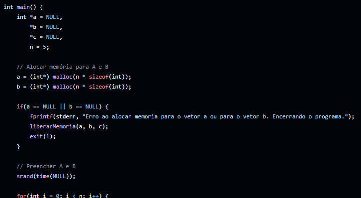

Sobre Mim
Apresentação
Olá! Sou o Lincoln, sou programador FullStack. Começando a programar aos 16 anos, tenho experiência de desenvolvimento com diversas linguagens de programação. Tenho ampla experiência com a linguagem de programação Java, mas já fiz projetos em várias outras.
Gosto muito de linguagens no geral (Tanto de programação quanto humanas). No quesito programação, fiz projetos em Java, C, Javascript, Google Apps Script e GDScript. Além de possuir conhecimento em linguagens de marcação ou estilo, como HTML, CSS e Markdown. No quesito humanas, sou fluente em inglês, além de estar estudando Libras.
Projetos

Exercicios-PreProva-Algoritmos

Listas de exercícios resolvidos e documentados em C. Repositório criado para auxiliar meus colegas de turma nos estudos.